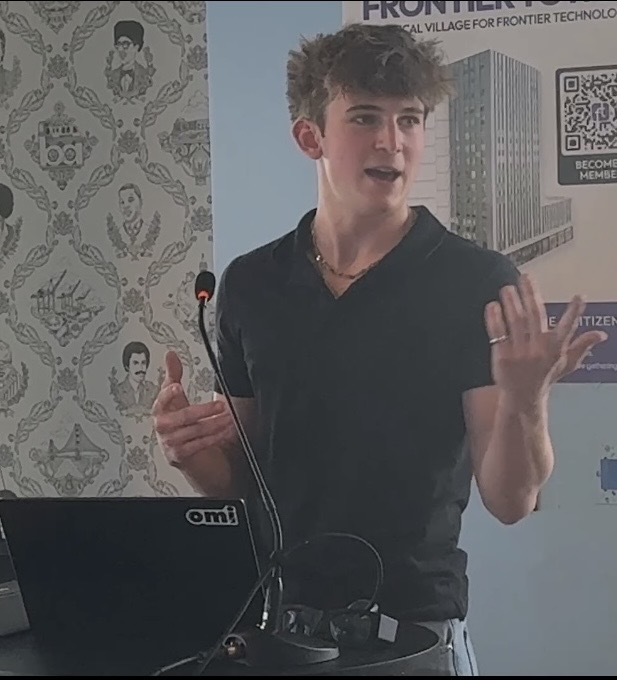

Nickita Khylkouski's Home Page
Student and builder in Redwood City - nickitakhy@gmail.com - resume

Research
Currently I am at Cerebral Valley doing data analysis, software engineering, and security engineering.
Data Enrichment
One thing I am interested in right now is data enrichment. I like taking messy video or image data and turning it into cleaner structure that is actually useful.
For example, if somebody gets out of a car, I want a person, a car, an exit event, and the link between them, not just raw footage.
Ranking Qualitative Data
Another thing I like is ranking qualitative data. Ranking data is hard enough already: which metric, how do you weight it, and how do you compare it.
The qualitative part makes it more interesting. Right now I am trying a variety of techniques such as turning it into numbers, using embedding models, training models, and seeing which representation gives the cleanest ranking.
Background
Outside of that, I have spent a lot of time in security research and penetration testing across enterprise, startup, and public-sector systems.
I have won 8 different hackathons, including YC and Replicate (Cloudflare).
Another part of my work is teaching. I am an AI Ambassador and Instructor at Inspirit AI, where I taught AI fundamentals to 60 students and reached 2,500+ people worldwide through education.
Projects
- cv-rank (private, email me for more info) - debiased applicant ranking with pairwise Elo-style comparisons. It combines LLM-as-judge scoring, rubric scoring, Swiss pairwise rounds, Bradley-Terry fitting, anonymization, position-bias mitigation, debiasing, and borderline review. Papers: Zheng et al. 2023, Prometheus 2024, Sziklai et al. 2022, Chatbot Arena 2024, Shi et al. 2024, and Tripathi et al. 2025.
- Ranky (private, email me for more info) - human-facing ranking for choosing the best photos. It uses pairwise comparison instead of flat scores, so the final order comes from simpler choices with fewer decisions.
- HumanPaste - paste does not work everywhere. It takes clipboard text and retypes it with realistic keystrokes, which is useful in terminals, remote sessions, and apps that accept typing but not direct paste.
- awake - keeps a Mac awake during long AI agent runs, with safeguards so background work does not die when the machine sleeps.
- ultrathink - drug-discovery search system using AlphaFold, ESMFold, MolGAN, RDKit, and simulated randomness inside an evolutionary search loop. The idea was to grade and improve molecules with many AI tools together so they can cover each other's gaps better than a single model.
- DateGuesser-website - weekday calculation trainer built around Conway's Doomsday algorithm, with repeated practice, feedback, and speed modes.
- BoidDynamics - interactive flocking and complex-systems simulation based on Craig Reynolds's Boids algorithm.
Open Source Contributions
Google/guava and
Google/mug: Java utility libraries.
Google/guava: cleanup, test hygiene, thread-leak fixes, and build reliability.
Google/mug: regex edge cases, locale-dependent failures, concurrency tests, and reproducible Maven builds.
Google/dotprompt: prompt tooling across
runtimes.
Build and test support, runtime parity fixes, package cleanup, docs fixes, and Python or Bazel workflow
improvements.
superset: AI agent desktop and infrastructure
work.
Desktop behavior, billing flow, telemetry cleanup, and the ElectricSQL or Cloudflare infrastructure path.
Miscellaneous
I like going to the gym, running, and doing track and field throws.
Lifts / marks: 225 bench, 355 squat, 405 deadlift, 6-minute mile, sub-20 5K.
Reaching Me
Email
nickitakhy@gmail.com
GitHub
github.com/nickita-khylkouski
LinkedIn
linkedin.com/in/nickita-khy
Here is my resume.